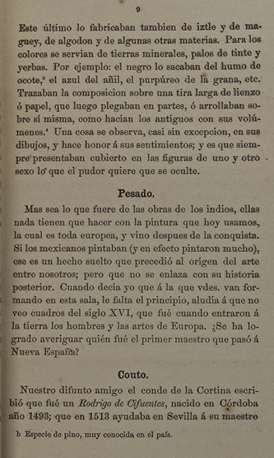

|
 |
Este último lo fabricaban también de iztle y de maguey, de algodon y de algunas otras materias. Para los colores se servian de tierras minerales, palos de tinte y yerbas. Por ejemplo: el negro lo sacaban del humo de ocote,b el azul del añil, el purpúreo de la grana, etc. Trazaban la composicion sobre una tira larga de lienzo ó papel, que luego plegaban en partes, ó arrollaban sobre sí misma, como hacian los antiguos con sus volúmenes.4 Una cosa se observa, casi sin excepcion, en sus dibujos, y hace honor á sus sentimientos; y es que siempre presentaban cubierto en las figuras de uno y otro sexo lo que el pudor quiere que se oculte. Pesado Mas sea lo que fuere de las obras de los indios, ellas nada tienen que hacer con la pintura que hoy usamos, la cual es toda europea, y vino después de la conquista. Si los mexicanos pintaban (y en efecto pintaron mucho), ése es un hecho suelto que precedió al origen del arte entre nosotros; pero que no se enlaza con su historia posterior.* Cuando decia yo que a la que vdes. van formando en esta sala, le falta el principio, aludia a que no veo cuadros del siglo XVI, que fué cuando entraron a la tierra los hombres y las artes de Europa. ¿Se ha logrado averiguar quién fué el primer maestro que pasó á Nueva España? Couto Nuestro difunto amigo el conde de la Cortina escribió que fué un Rodrigo de Cifuentes, nacido en Córdoba año 1493; que en 1513 ayudaba en Sevilla á su maestro b Especie de pino, muy conocida en el país.
|
| |
1 | 2 | 3 | 4 | 5 | 6 | 7 | ... | 105 | Fin de la muestra | ||
| Arriba |
||||||||||||